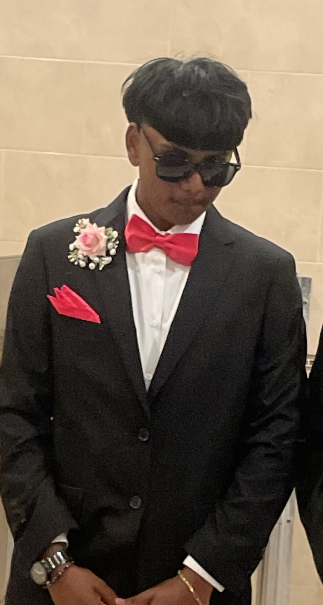

Paavish Singh
Student at Thomas A. Edison CTE High School
I am currently a 12th grade student at Thomas A. Edison CTE High School, in the Web and App Development CTE Course. I’m interested in Engineering and Mechanical Work. I also enjoy just hanging around my friends, exploring new skills, and finding ways to improve what I know, and genuinely learning different things. I’m still figuring out exactly what I want to do in the future, but I’m looking forward to gaining experience and learning more along the way to figure out what i’m truly capable of doing.
Links
Add your links from the Curator Guide.
Featured Projects
Each of these project includes an embed and a reflection of why this project is displayed here. These projects were specifically choosen because they show how I came to be and the experiences I have as a Web & App Developer.
Waterfall_Cave_Sound
The reason what I choose this was because this was one of my first times using Unity and this project specifically helped me actually understand how Unity works and how we can use its different factors to bring something to life.
Skills: Unity, HTML, CSS
Fox Hunt
Although there is a good amount of bugs in this project, I choose this because this is when I actually finally knew my way around Unity and actually created a game using the information I learned prior.
Skills:Unity, Python, HTML, CSS